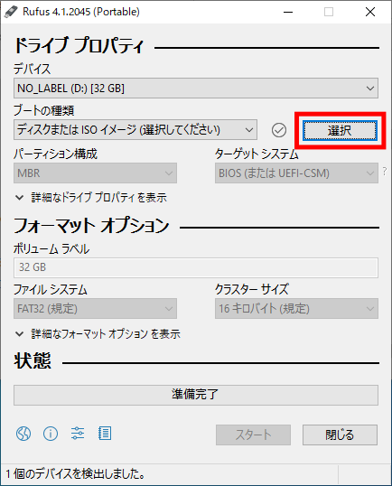
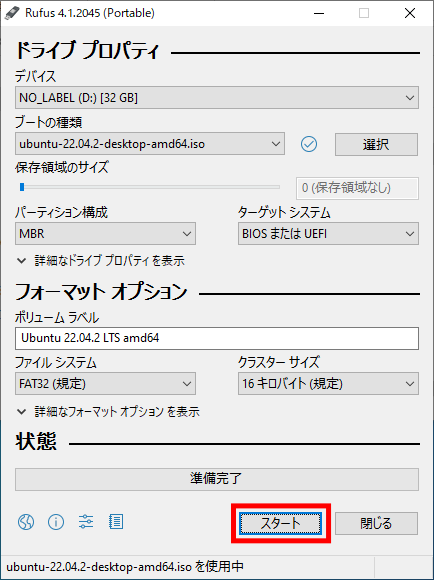
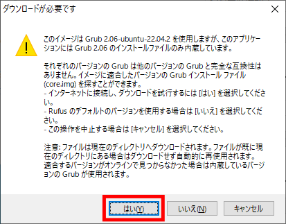
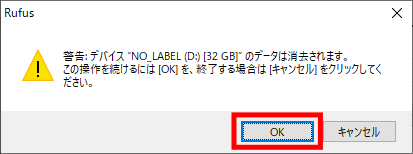
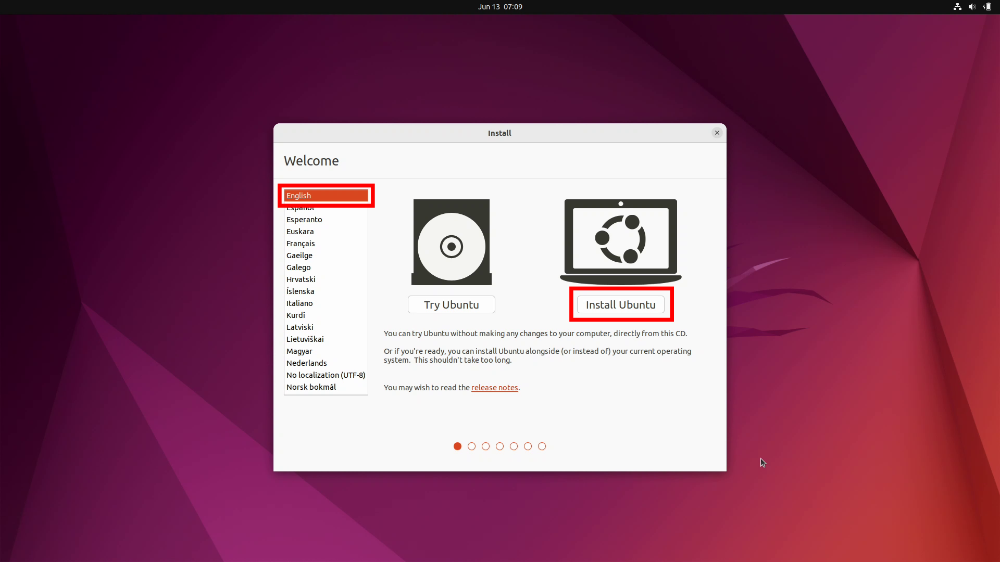
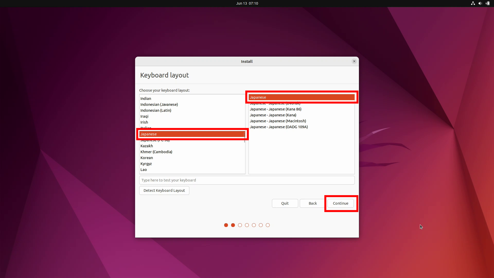
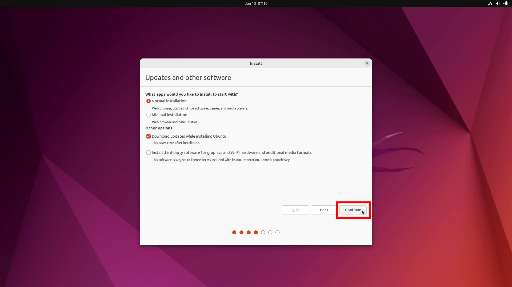
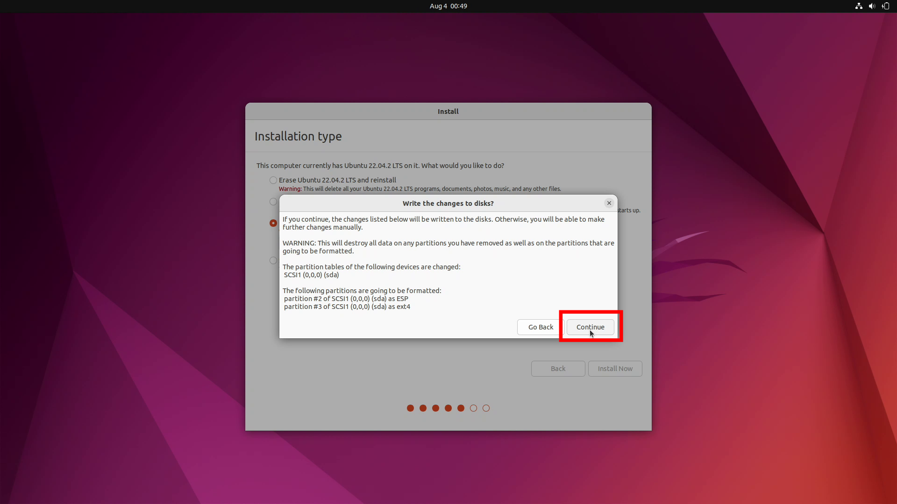
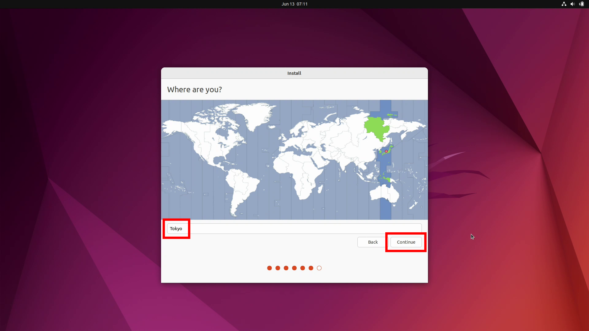
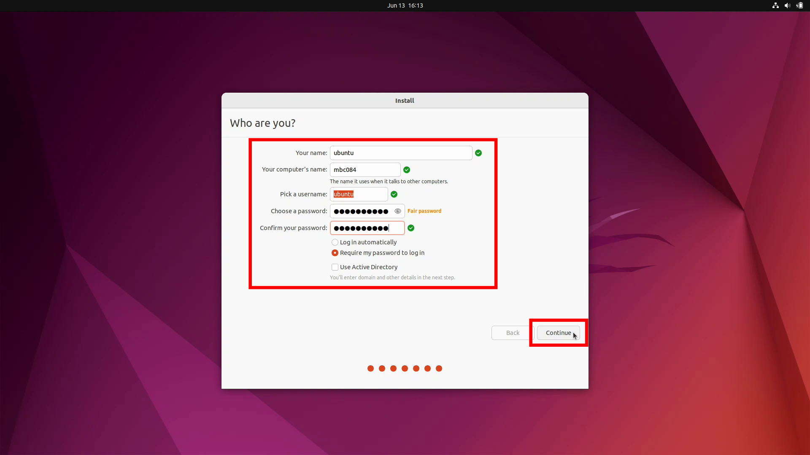

Linuxのインストール（PC）#
Linuxはオープンソースのオペレーティングシステム（OS）です。
PCにはUbuntu Desktop 22.04 LTSをインストールします。
Linuxのダウンロード#
Ubuntu Desktop 22.04 LTSのディスクイメージを UbuntuのHP からダウンロードします。

ダウンロードフォルダに保存されます。

Rufusのダウンロード#
Rufus（ルーファス）は起動可能なUSBフラッシュドライブを作成することができるソフトウェアです。
Rufusを RufusのHP からダウンロードします。

下のほうにスクロールしていくと、ダウンロードのリンクがあります。
ここから、Portableをダウンロードしてください。

ダウンロードフォルダに保存されます。

Live USBの作成#
ダウンロードしたRufusをダブルクリックすると、Rufusが起動します。
［選択］ボタンをクリックしてください。
Ubuntuのイメージディスクファイルを選択します。

［スタート］ボタンをクリックしてください。
［OK］ボタンをクリックしてください。

［はい］ボタンをクリックしてください。
［OK］ボタンをクリックしてください。
インストールメディアの作成中。

［閉じる］ボタンをクリックしてください。

Linuxのインストール#
Live USBをPCに挿入してください。
PCの電源ボタンを押したら、［F12］キーを連打し、Boot Optionsの画面を表示させてください。

［↑］と［↓］を使ってUSB Storagr Deviceを選択し、［Enter］を押してください。
{kind=link}
Try or Install Ubuntuが選択されていることを確認し、［Enter］を押してください。

しばらく待つ。

もう少し待つ。
{kind=link}
Welcomeは、「English」が選択されいることを確認し、［Install Ubuntu］ボタンをクリックしてください。
{kind=link}
Keyboard layoutは、「Japanese」−「Japanese」を選択し、［Continue］ボタンをクリックしてください。
{kind=link}
Updates and other softwareは、デフォルトのまま ［Continue］ボタンをクリックする。 ※有線LANを接続していないと、Wirelessの設定画面が出てくる。
{kind=link}
Installation typeは、 ［Erase Ubuntu 22.04.2 LTS and reinstall］を選択し ［Install Now］ボタンをクリックする。 ※違う画面が出てくるかもしれない。
{kind=link}
Write the changes to disks?ウィンドウが表示されたら ［Continue］ボタンをクリックする。
{kind=link}
Where are you?は、［Tokyo］が選択されていることを確認したら ［Continue］ボタンをクリックする。
{kind=link}
Who are you?は、次の通り入力する。
Your name: ubuntu
Your computer’s name: mbc***
Pick a username: ubuntu
Choose a password: hirate2020
Confirm your password: hirate2020
Require my password to login: Require my password to log in にチェック
入力できたら［Continue］ボタンをクリックする。
{kind=link}
インストールが始まる。
{kind=link}
インストールが終了すると、 Installation Completeウィンドウが表示されるので ［Restart Now］ボタンをクリックする。

Please remove the installation medium, then press ENTER というメッセージが表示されるので Live DVDを取り出して［Enter］を押す。
{kind=link}
Linuxへのログイン#
ログイン画面が表示されたら、 パスワードを入力してログインする。
{kind=link}
はじめに、各種設定の画面が表示されるが、 全てデフォルトのままとする。 Connect Your Online Accountsは、 ［Skip］ボタンをクリック。
Linux Login 2
Livepatchは、 デフォルトのまま［Next］ボタンをクリック。
Linux Login 3
Help improve Ubuntuは、 デフォルトのまま［Next］ボタンをクリック。
Linux Login 4
Privacyは、 デフォルトのまま［Next］ボタンをクリック。
Linux Login 5
You’re ready to go!は、 ［Done］ボタンをクリック。
Linux Login 6
Software Updaterが出てきたら、 ［Install Now］ボタンをクリック。
Linux Login 7
パスワードを入力する。
Linux Login 8
アップデート中。
Linux Login 9
アップデートが終了したら、 ［Restart Now］をクリックして再起動する。
Linux Login 10
Linuxの日本語化#
左下のワッフルメニューをクリックして、アプリケーションを表示する。 [Settings]をクリックする。
Linux Japanese 1
[Settings]が起動する。
Linux Japanese 2
[Region & Language]を選択し、[Manage Installed Languages]をクリックする。
Linux Japanese 3
[Install]をクリックする。 ここでパスワードの入力を求められるので、パスワードを入力する。
Linux Japanese 4
変更の適用中。
Linux Japanese 6
[Language]に日本語（まだグレー）があることを確認したら、[Close]をクリックする。
Linux Japanese 7
[Language]をクリックする。
Linux Japanese 8
[日本語]を選択して、[Select]をクリックする。
Linux Japanese 9
[Restart]をクリックして、再起動する。 実際はログアウトするだけなので、再度ログインする。
Linux Japanese 10
再起動すると次のウィンドウが出てくるので、 [次回から表示しない]にチェックをして、 [古い名前のままにする]をクリックする。
Linux Japanese 11
表示が日本語化された。 再度Settingsを起動して、[地域と言語]をクリックする。 [入力ソース]の下の[+]をクリックする。
Linux Japanese 12
[日本語]をクリックする。
Linux Japanese 13
[日本語(Mozc)]を選択して、[追加]をクリックする。
Linux Japanese 14
[入力ソース]に[日本語(Mozc)]が追加された。
Linux Japanese 15
これで日本語を入力することができるようになりました。 日本語と英語の切り替えは、[Windows] + [Space] で行います。